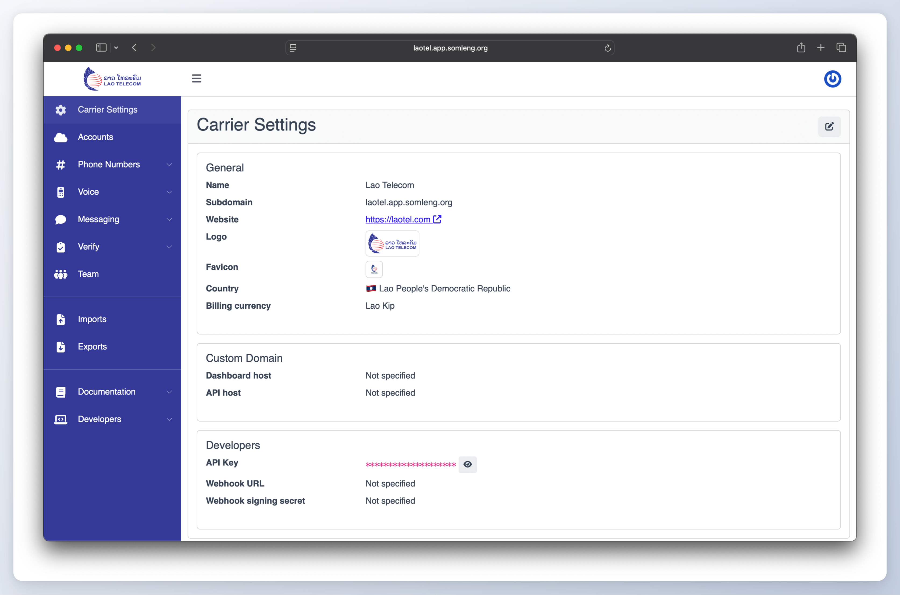

Around the world, governments and regulators are increasingly mandating that Mobile Network Operators (MNOs) play a central role in National Early Warning Systems (EWS). Until now, the technology powering these systems has been dominated by expensive, closed solutions.
OpenEWS changes this. It's the world's first open source Digital Public Good (DPG) designed specifically for alerting authorities. Built to integrate seamlessly with Somleng, an open-source white-label CPaaS, OpenEWS provides governments with a cost-effective dissemination platform while creating new opportunities for MNOs to generate revenue.
How it Works
Alerting authorities use OpenEWS to create and send critical alerts. These alerts are distributed through Somleng, which connects directly to the MNO's network. For the MNO, this achieves two things:
- CSI Compliance: Support the nation's official EWS with minimal investment.
- New Revenue Streams: Leverage the same CPaaS infrastructure to offer AI-powered voice agents, programmable SMS, and programmable voice services to enterprise customers.
Proven Business Model
Somleng already powers diverse revenue streams with income from both MNOs and NGOs. Our existing MNO customers exclusively use Somleng commercially to sell programmable communications and AI-powered agents in untapped markets.
Now, with OpenEWS integrated, MNOs can serve both the public sector (via national EWS) and the private sector (via CPaaS offerings) on a single platform.
Spotlight: Lao Telecom 🇱🇦
Lao Telecom is set to become one of the first operators to use Somleng for both national impact and commercial growth. They will power the country's National Early Warning System through OpenEWS, while simultaneously launching new programmable communications and AI voice services for their enterprise customers.
This dual use case demonstrates the unique advantage of Somleng + OpenEWS: serving as both a public good and a commercial growth engine.
What's Next
We are expanding the platform to support:
- LBSMS (Location-Based SMS)
- LBIVR (Location-Based IVR)
- Cell Broadcast
These capabilities will further strengthen MNOs' role in national EWS while opening up additional enterprise services.
Backed by GSMA Innovation Fund
OpenEWS and Somleng are proudly supported by the GSMA Innovation Fund. With GSMA's backing, we are able to scale faster, collaborate more effectively with MNOs, and accelerate innovation at the intersection of public safety and commercial opportunity. This recognition underscores the global importance of building open, sustainable, and revenue-generating telecom solutions.
Join Us
With deployments already underway in Cambodia, Laos, and new projects beginning in Nepal, we are demonstrating a scalable model for MNOs worldwide.
By partnering with OpenEWS and Somleng, MNOs can satisfy regulatory obligations, contribute to national resilience, and tap into the rapidly growing market for AI-powered voice and programmable communications.